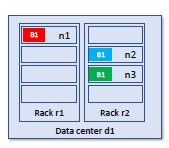

Hadoop Distributed File System
The first thing that software has to provide is abstraction, as we want to interact with the disks of the machines as if it was a single machine. We want a single reference and we want to talk to a single entity. - Master-Slave architecture A single entity works as a master and handles the storage of the data with a set of slaves that are running of single machines.
The software needs to deal with big data: - Files may be bigger than single disks - We need to split files into smaller blocks and store them on different machines
ALso, fault tolerance is of key importance: disks can fail, machines can be unreachable, but data should always be available. - we can store multiple copies of each block
HDFS - definition
HDFS is filesystem designed for storing very large files with a streaming data access patterns, running on clusters of commodity hardware. - Application that run on HDFS need streaming access to their data sets. - I do not want to continuously update data with batch operations. - The emphasis is on high throughput of data access rather than low latency of data access
Blocks -> splitting files into block that range between 64MB and 1GB. We need blocks because files can be larger than disks. - Why are blocks this big? We focus on giving a high throughput as large files split into many small blocks require a huge number of seeks.
Master - Slave Abstraction
Master service -> namenode - Persistently maintains the filesystem tree - Coordinates the storage on different machines - Keeps in memory the location of each block for a given file (block pool) Slaves -> datanodes - Store and retrieve blocks
SPoF
The namenode is a single point of failure: without it, the file system cannot be used. - Backup solution: not the best solution - Secondary NN Solution: separate machine in which a secondary namenode is installed and does some synchronization with the primary one (while being in a sleeping state).
High Availability
Most of the big data tools and frameworks use this term to reference solutions that answer to the problem of always having data available no matter what.
HA indicates a system that can tolerate faults. - Supported by configuring two separate machines as NNs: - One is active (up and running) - The other is in standby In the event of failure of the active NN, the standby NN takes over.
It s a more complex solution in terms of resources and communication with the network, but it guarantees that in case of failure, there will not be any downtime.
HDFS - federation
There is no need to have a single file system, but we can have many systems on the same cluster. We can create multiple NN that manage different file systems.
This has several advantages: - Performance (if we have a large filesystem with lots of data, the NN can be a bottleneck in terms of answering to multiple requests of users. By dividing file systems with different NN that address different requests, performance will increase) - Availability - Scalability (when the file system is large, the metadata can become quite huge. The metadata block needs to be lowered in memory so splitting metadata among different machines allows scalability) - Maintainability, Security and Flexibility
HDFS - replication
Whenever we want to save a file in the file system, this will be splitted in blocks and stored separately.
Each data block is independently replicated at multiple DNs in order to improve performance and robustness.
Nodes are organized in racks, that are organized in data centers. - Hadoop models such concepts in a tree-liked fashion and computes the distance between nodes as their distance on the tree.
The typical rule is to store the first replica on the node (n1) where the client issued the write command. Replica 2 is stores on a node (n2) in a rack (r2) different form n1. Replica 3 is stored on a node different from n2 but tha belongs to r2.

Hadoop 3 alternative to simple replication: - Each block is split across each data node - It reduces data redundancy - It requires less storage (less money) - Faster writes (when we need to write data, the data to write are less) - DISADVANTAGES: - Higher CPU cost (whenever we want to access data, having split the blocks in further blocks, we need to rebuild the blocks) - Loss of data locality (whenever we have a unit of work that is running on a certain machine, the system tries to instatiate this application as close to the data as possible. This works if all the data are in the same machine, but in this solution data are slit in different machines. Therefore, we cannot apply the data locality principle.) - Longer recovery time
HDFS not always the best fit
Although this may change in the future, there are area where HDFS is not a good fit: 1. Low-latency data access 2. Lots of small files
I/O communication
An application client wishing to read a file must first contact the NN to determine where the actual data is stored. - The NN identifies the relevant block - The client contacts the DN to retrieve the data
Features of design: - The namenode never removes data - All data transfer occurs directly between clients and DNs - Communications with the NN only involve transfer of metadata
Created: September 21, 2022 07:53:49